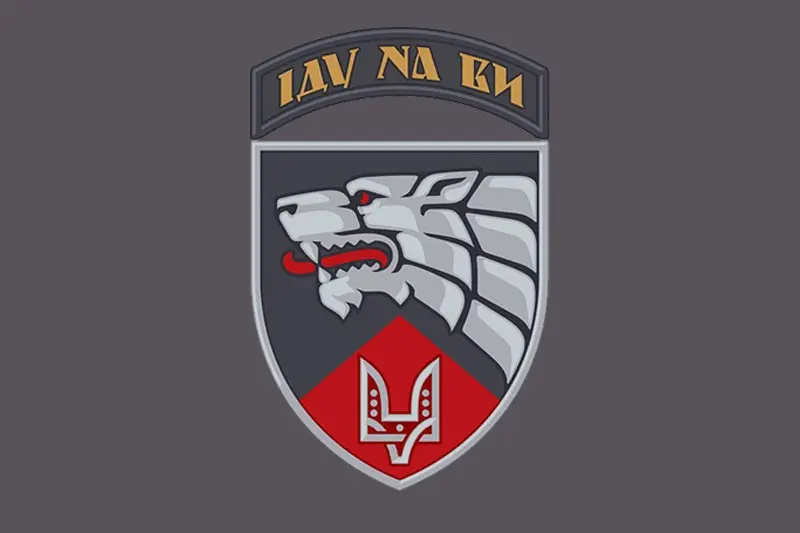

Жидков Микола
Людина, яка любила футбол та карате
Народився 2001 року м. Кропивницький
В 5 років почав тренуватися в Клубі «Будокан» у тренера Михайла Савєльєва.
За п'ять
років тренувань дійшов до розряду 1 кю в 10 років.
Був улюбленцем і гордістю клубу.
Микола є прикладом мужності для багатьох. Маючи спокійне, щасливе життя, маючи перспективи, які відкривались перед ним -
успіхи в кар'єрі, він не зміг продовжувати звичне розмірене життя за кордоном, залишивши все, він повернувся виборювати
щасливе майбутнє на Батьківщині не тільки для себе, але і для всіх українців. Багато людей відаючи шану його пам'яті
влаштовують турніри по футболу на його честь, банери з його зображенням майорять на футбольних матчах збірної України.
3-й окремий полк спеціального призначення імені Святослава Хороброго
Спогад про героя
Одночасно займаючись карате і футболом, в 2011 році любов до футболу переважила і він розпочав активно розвивати свою футбольну кар'єру. Риси характеру здобуті в карате лише допомагали Миколі у футболі. Проходив навчання в академії футболу "Зірка", училище Олімпійського резерву в м. Дніпро та МФК "Кремінь". Після закінчення школи в м. Кременчук Микола переїхав до Краківської школи спортивної майстерності у Польщі для подальшого розвитку своєї спортивної кар'єри. Миколі вдалося стати одним із кращих гравців місцевого клубу передмістя Кракова, а також завоювати прихильність польських фанатів, які лагідно звуть його "Miki".
З початком повномасштабного вторгнення почав активну волонтерську діяльність, але мав деякі зобов'язання, які не дозволяли йому приїхати до України. Після закінчення футбольного сезону заявив про тверді наміри приїхати до України та вступити до лав ЗСУ. При підписані контракту з військовою частиною виявив бажання проходити службу в найгарячіших точках.
Загинув 1.06 від артилерійського обстрілу під час надання бойової підтримки іншим підрозділам ЗСУ